Recitation 3
Histograms · Frequency polygons & dot diagrams · Scatter plots & correlation · Jittering, mosaic & bubble plots
How to use this page
Each question below is interactive. Click an option or type an answer, then press Check (or Enter). Show answer reveals the solution and the explanation, and Reset clears the question so you can try again.
Numbers can be typed with a dot or a comma (3.2 or 3,2); round to 2 decimals unless a question says otherwise.
Progress
Part A — Histograms
- A histogram consists of adjoining boxes (no gaps between the boxes). The horizontal axis shows what the data represent; the vertical axis shows the frequency or the relative frequency (percent). The graph has the same shape with either label.
- A histogram shows the shape, the center and the spread of the data. It is most practical for large data sets (100 values or more) and it is not suitable for categorical (qualitative) data.
- Number of classes: many histograms use 5 to 15 classes. A guide based on the number of observations:
| Number of observations | < 50 | 50–200 | 200–500 | 500–1,000 | 1,000–5,000 | 5,000–50,000 | > 50,000 |
|---|---|---|---|---|---|---|---|
| Number of classes | 5–7 | 7–9 | 9–10 | 10–11 | 11–13 | 13–17 | 17–20 |
- Class width \(= \dfrac{\text{largest} - \text{smallest}}{\text{number of classes}}\) (largest and smallest observations), rounded up to a convenient number. The first class starts at a number smaller than the smallest observation.
- Relative frequency \(= \dfrac{\text{class frequency}}{\text{total number of observations}}\). Use it when comparing two or more histograms whose samples have different sizes.
- Unequal class widths: when some classes have very low frequencies, several classes can be combined into a wider, “more populated” class, or an open-ended class can be formed at the lower or upper end.
- Reading a histogram: the highest bar is the modal class; a long tail to the right means positively (right) skewed, a long tail to the left means negatively (left) skewed; bars spread over a wide range mean high variability; a gap or dip means no or few observations in that range.
- Shapes: symmetric (bell or mound shaped), positively or negatively skewed, uniform, unimodal (one modal class), bimodal (two modal classes) or multimodal.
80 students reported how many minutes they spend on their phone in bed before falling asleep.
| Minutes | 0–15 | 15–30 | 30–45 | 45–60 | 60–75 | 75–90 | 90–105 |
|---|---|---|---|---|---|---|---|
| Frequency | 6 | 14 | 24 | 18 | 10 | 5 | 3 |
The relative frequency of the class 30–45 is .
The modal class is minutes.
The midpoint of the class 45–60 is .
% of the students spend 60 minutes or more on their phone before sleeping.
The long tail is on the right, so the histogram is .
- \(n = 6 + 14 + 24 + 18 + 10 + 5 + 3 = 80\), so the relative frequency of 30–45 is \(24/80 = 0.30\). It is also the modal class (24 is the largest frequency).
- Midpoint of 45–60: \((45 + 60)/2 = 52.5\).
- 60 minutes or more: \((10 + 5 + 3)/80 = 18/80 = 0.225 = 22.5\%\).
- The frequencies fall off slowly towards large values: a long right tail, so the histogram is positively (right) skewed.
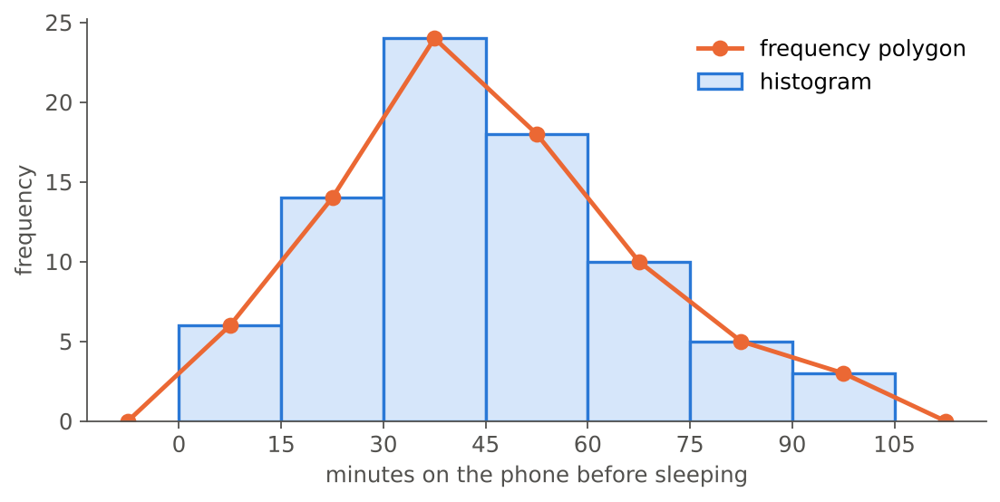
A bus company recorded 320 commute times (in minutes). The smallest is 2.4 and the largest is 79.8 minutes.
According to the table in the key terms, the histogram should have between 9 and classes.
The range is minutes. Using 9 classes, the class width is \(77.4 / 9 =\) , which we round up to minutes.
The first class must start at a number smaller than ; if it starts at 2, the 9 classes cover 2 to minutes.
- 320 observations lie in the row 200–500, which suggests 9–10 classes.
- Range \(= 79.8 - 2.4 = 77.4\); width \(= 77.4/9 = 8.6\), rounded up to 9.
- Starting at 2 (smaller than the smallest value 2.4), the classes are 2–11, 11–20, …, 74–83. The last class ends at \(2 + 9 \times 9 = 83 \ge 79.8\), so every observation fits.
Which statements about histograms are true? Select all that apply.
- The boxes of a histogram are adjoining: there are no gaps between them.
- A histogram drawn with relative frequencies has the same shape as one drawn with frequencies.
- Histograms are more practical when the data set has about 100 values or more.
- A histogram is a good graph for the favourite colours of 200 students.
- The first class should start at a number smaller than the smallest observation.
- Changing the class width changes the data, so only one histogram of a data set is correct.
- d is false: favourite colour is categorical (qualitative); a histogram is not suitable for categorical data.
- f is false: the data stay the same; only the picture changes. That is why it is useful to try several class (bar) widths, as in the tipping example of the lecture.
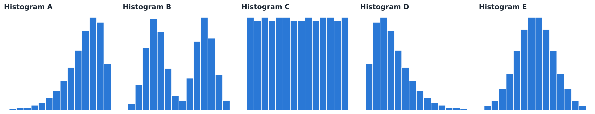
Describe the shape of each histogram.
- Histogram A :: Negatively skewed
- Histogram B :: Bimodal
- Histogram C :: Uniform
- Histogram D :: Positively skewed
- Histogram E :: Symmetric
- A: long tail to the left → negatively skewed.
- B: two modal classes → bimodal.
- C: all bars about the same height → uniform.
- D: long tail to the right → positively skewed.
- E: mound (bell) shaped and mirror-symmetric → symmetric. Many statistical techniques require a bell-shaped population; drawing the histogram helps to check this.
600 customers’ spending at a campus café (in ₺) is shown with three different bar widths.
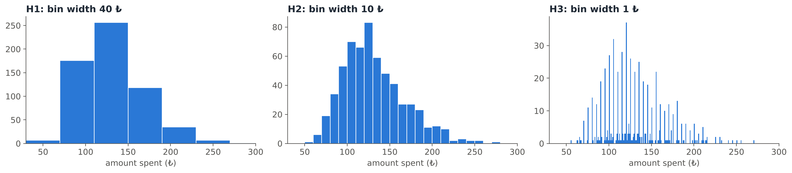
Which histogram reveals that many customers spend a round amount (a multiple of 5 ₺)?
- H1 (bar width 40 ₺)
- H2 (bar width 10 ₺)
- H3 (bar width 1 ₺)
- None of them: a histogram can never show this
Only the narrow bars of H3 show the tall peaks at 50, 55, 60, … ₺: many amounts are rounded to a multiple of 5. With the wide bars of H1 the histogram simply looks unimodal and right-skewed; H2 starts to show more detail.
This is the same lesson as the tips histograms in the lecture: as the bar width gets smaller, the histogram went from unimodal to multimodal, revealing that customers round their tips. Wide bars show the overall shape; narrow bars show fine details. Look at several widths before you interpret.
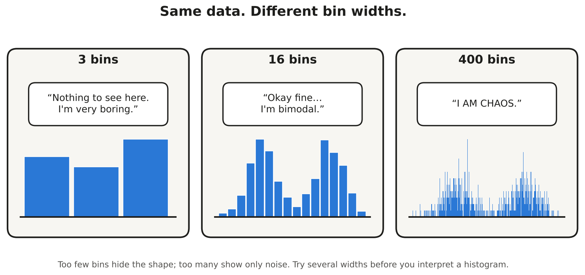
The monthly incomes (thousand ₺) of 200 part-time student workers are grouped as follows:
| Income | 0–5 | 5–10 | 10–15 | 15–20 | 20–25 | 25–30 | 30–35 | 35–40 |
|---|---|---|---|---|---|---|---|---|
| Frequency | 38 | 74 | 52 | 27 | 5 | 2 | 1 | 1 |
The last four classes have very low frequencies. If we combine them into one wider class 20–40, its frequency is .
Alternatively, we can form an open-ended class “20 and over” with the same frequency. With this class, the table has classes.
\(5 + 2 + 1 + 1 = 9\). The new table is 0–5, 5–10, 10–15, 15–20 and “20 and over”: 5 classes.
The lecture: it is generally best to use equal class widths, but unequal class widths are used when the frequency of some classes is too low; several classes are then combined to form a wider and “more populated” class, or an open-ended class is formed at the higher or lower end.
Section A has 40 students and Section B has 160 students. You want to compare their exam score distributions with two histograms. What should the vertical axis show?
- Frequencies, because they are the real counts
- Relative frequencies (or percentages)
- The class midpoints
- It does not matter, the comparison is the same either way
With frequencies, Section B’s bars are about four times as tall just because it is bigger, which hides the comparison. The lecture: relative frequencies should be used when comparing two or more histograms and the number of observations of the samples are different. Also use the same classes for both histograms.
The heights of all members of a university sports club form a bimodal histogram, with one modal class near 168 cm and another near 192 cm. The club has a gymnastics team and a basketball team.
Explain what the two modal classes probably mean, and how you would display the data instead.
Model answer: The histogram is bimodal because two different groups are mixed together: gymnasts (shorter) and basketball players (taller). This also makes the spread of the combined data large. Draw a separate histogram for each team, using the same classes and relative frequencies (the teams may have different sizes), so the two distributions can be compared.
Put the steps for constructing a histogram in the correct order.
- Collect the data and find the smallest and largest observations
- Choose the number of classes (use the table of the number of observations)
- Compute the class width and round it up to a convenient number
- Set the class limits, starting below the smallest value
- Count the frequency (and relative frequency) of each class
- Draw adjoining boxes whose heights are the frequencies (or relative frequencies)
This is the lecture’s recipe: collect data → prepare a frequency distribution → draw a histogram. You need the number of classes before you can compute the width, and the class limits before you can count.
Part B — Frequency polygons, dot diagrams and outliers
- Frequency polygon: points at the midpoints of the class intervals (height = frequency), connected with straight lines. As in the lecture example, the polygon is closed with a point of frequency 0 one class width beyond each end.
- Dot diagram: each observation is a dot on a number line. The aim is to identify unusual features of the data.
- Outlier: an observation that is unusually large or small relative to the other values. Three reasons for outliers: (1) the measurement was observed, recorded or entered incorrectly; (2) it comes from a different population; (3) it is correct but represents a rare event.
Look at the frequency polygon in the explanation of the first question (phone time before sleeping, classes of width 15 from 0 to 105 minutes).
Each point of a frequency polygon is plotted at the class . The first point of the data is at \(x =\) with height . To close the polygon, we add one extra point with frequency 0 at each end, at \(x =\) and \(x =\) .
The points are the midpoints 7.5, 22.5, …, 97.5 with heights equal to the frequencies (6, 14, …, 3). The extra points sit one class width (15) beyond the first and last midpoints: \(7.5 - 15 = -7.5\) and \(97.5 + 15 = 112.5\), just like 44.5 and 104.5 in the calculus scores example of the lecture.
A consumer magazine tested the battery life of 17 phones of the same model:
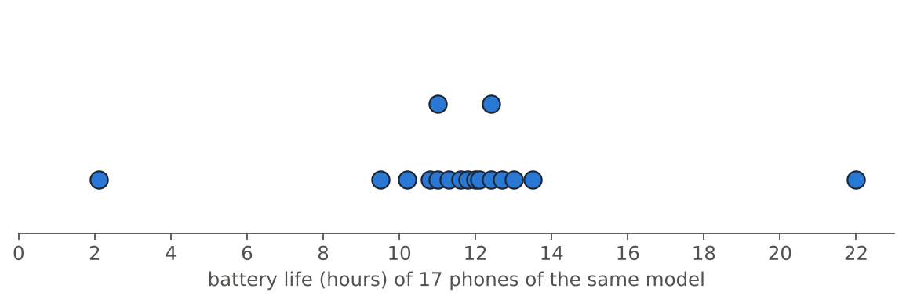
Most phones last between and hours.
The dot diagram shows unusual values: a very small one at hours and a very large one at hours.
Fifteen dots form a cluster from 9.5 to 13.5 hours. The values 2.1 and 22.0 are far from all the others: they are potential outliers. Identifying such unusual features is exactly the aim of a dot diagram (compare the neutrino example of the lecture, where one time of 7.3 s stands out).
For each outlier, what is the most likely reason?
- A student’s height is recorded as 2.78 cm :: Recorded or entered incorrectly
- The phone that lasts 22 hours in the test above turns out to be the newer “Pro” model with a bigger battery :: Comes from a different population
- In a study of adults’ blood pressure, one participant is a 9-year-old child :: Comes from a different population
- A “daily screen time” of 31 hours :: Recorded or entered incorrectly
- The highest river level in 50 years of daily measurements, recorded during a once-in-a-century flood :: Correct, but a rare event
- A ₺160 tip on a ₺530 food order from a very generous customer :: Correct, but a rare event
- Incorrect values (2.78 cm, 31 hours in a day) are impossible: they were observed, recorded or entered incorrectly.
- Different population: another phone model, a child among adults.
- Rare events: a record flood or a very generous customer are correct values. As the lecture says about the large tips: these are outliers, but from a waiter’s perspective, these are the customers that you like!
Part C — Scatter plots and correlation
- Two variables are related (associated) when knowing one helps you understand or predict the other. The statistical study of the relationship between variables is called regression.
- A scatter plot shows the \((x, y)\) pairs. It helps us understand the form, direction and strength of the relationship.
- Explanatory (independent, input) variable \(x\): explains changes in the response; horizontal axis. Response (dependent, output) variable \(y\): measures the outcome. If there is no explanatory–response distinction, either variable can go on the horizontal axis.
- Typical patterns: positive linear, negative linear, no relationship, nonlinear (e.g. negative nonlinear, concave); also quadratic, cubic, exponential, logarithmic or random patterns.
- Correlation measures the strength and direction of the linear relationship. The correlation coefficient of two continuous variables: \[r = \frac{\sum (x_i - \bar{x})(y_i - \bar{y})}{\sqrt{\sum (x_i - \bar{x})^2}\,\sqrt{\sum (y_i - \bar{y})^2}}\]
- Properties: \(-1 \le r \le 1\). If \(r = 1\), the data form a straight line with a positive slope; if \(r = -1\), a straight line with a negative slope; if \(r = 0\), the data have no (linear) correlation.
For each pair, which variable is the explanatory variable and which is the response?
- Hours of sunlight per day (in a study of plant growth) :: Explanatory
- Plant growth (cm per week) :: Response
- Price of a cup of coffee (in a study of daily sales) :: Explanatory
- Number of cups of coffee sold per day :: Response
- Daily maximum temperature (in a study of electricity use) :: Explanatory
- Daily electricity use for air conditioning :: Response
The response variable measures the outcome of the study; the explanatory variable explains changes in it: sunlight → growth, price → sales, temperature → electricity use. The explanatory variable goes on the horizontal (\(x\)) axis. If there is no natural explanatory–response distinction (for example, the heights of two siblings), either variable can go on the horizontal axis.
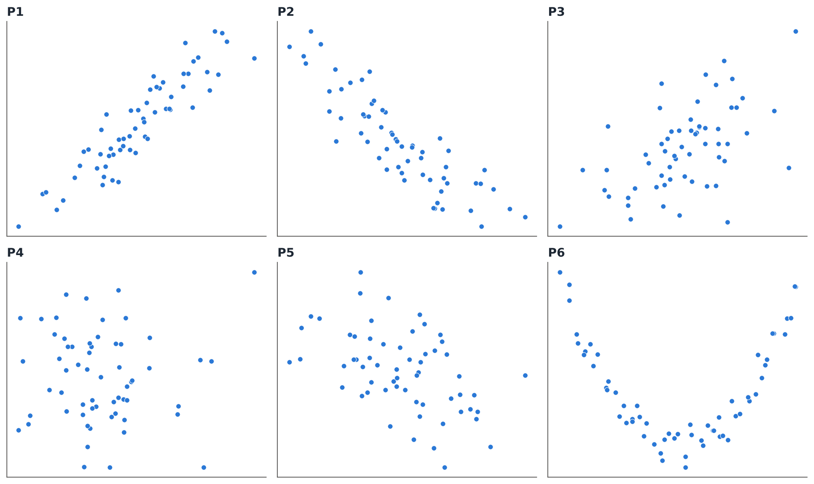
Describe the relationship shown in each scatter plot.
- P1 :: Strong positive
- P2 :: Strong negative
- P3 :: Weak positive
- P4 :: No relationship
- P5 :: Weak negative
- P6 :: Nonlinear relationship
The computed values are P1: \(r = 0.91\), P2: \(r = -0.87\), P3: \(r = 0.54\), P4: \(r = 0.00\), P5: \(r = -0.48\) and P6: \(r = -0.01\).
P6 is the trap: the points follow a clear U-shaped (nonlinear) pattern, yet \(r \approx 0\). The correlation coefficient is a measure of the linear relationship only, so always look at the scatter plot, not just at \(r\).
Five students report the hours they slept the night before an exam (\(x\)) and their exam score (\(y\)):
| \(x\) (hours of sleep) | 4 | 5 | 6 | 7 | 8 |
|---|---|---|---|---|---|
| \(y\) (score) | 50 | 62 | 58 | 70 | 75 |
\(\bar{x} =\) , \(\bar{y} =\)
\(\sum (x_i-\bar{x})(y_i-\bar{y}) =\) , \(\sum (x_i-\bar{x})^2 =\) , \(\sum (y_i-\bar{y})^2 =\)
\(r =\) : a linear relationship.
| \(x\) | \(y\) | \(x - \bar{x}\) | \(y - \bar{y}\) | \((x-\bar{x})(y-\bar{y})\) | \((x-\bar{x})^2\) | \((y-\bar{y})^2\) |
|---|---|---|---|---|---|---|
| 4 | 50 | −2 | −13 | 26 | 4 | 169 |
| 5 | 62 | −1 | −1 | 1 | 1 | 1 |
| 6 | 58 | 0 | −5 | 0 | 0 | 25 |
| 7 | 70 | 1 | 7 | 7 | 1 | 49 |
| 8 | 75 | 2 | 12 | 24 | 4 | 144 |
| Sum | 58 | 10 | 388 |
\[r = \frac{58}{\sqrt{10}\,\sqrt{388}} = \frac{58}{62.29} = 0.93\]
There is a strong positive linear relationship: students who slept more tended to score higher.
Which statements about the correlation coefficient \(r\) are true? Select all that apply.
- \(r\) is always between −1 and 1.
- If \(r = -1\), all points lie on a straight line with a negative slope.
- \(r\) measures the strength and direction of the linear relationship.
- If \(r = 0.8\), then 80% of the points lie on a straight line.
- A strong nonlinear relationship can have \(r\) close to 0.
- A positive \(r\) means that \(y\) decreases as \(x\) increases.
- \(r\) can be computed between the favourite colour and the hometown of students.
- d is false: \(r\) is not a percentage of points; it measures how closely the points follow a straight line.
- f is false: a positive \(r\) means \(y\) tends to increase as \(x\) increases.
- g is false: \(r\) is defined for two continuous (numerical) variables, not for categorical ones.
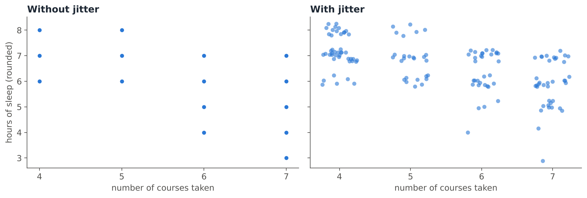
The data show 140 students, but the left plot seems to contain only about 15 dots. Why, and what does jittering do?
- Most students did not answer, so their dots are missing.
- Many students have exactly the same (courses, sleep) pair, so their dots are drawn on top of each other. Jittering adds a small amount of random noise so that the overlapping points become visible.
- Jittering removes outliers so that the plot looks cleaner.
- Jittering rounds the data so that more points fall on the same spot.
Both variables are discrete, so dozens of students share each position: this is overplotting. The lecture: jittering is the act of adding random noise to data in order to prevent overplotting. For example, to a value of 1 you might add \(u\), a uniform random number in \([-0.5,\, 0.5]\) (here we used \([-0.25,\, 0.25]\)).
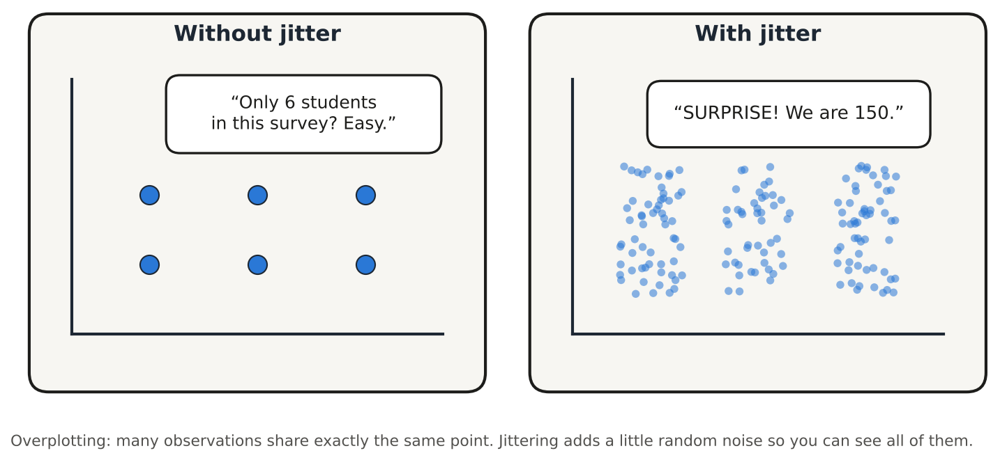
Which statements about scatter plots and jittering are true? Select all that apply.
- Scatter plots are really only effective when both variables are continuous.
- Jittering is needed when both variables are continuous and no two observations are equal.
- With discrete data such as party size or years of education, a box plot at every level can be tedious and difficult to read, so a jittered scatter plot is a good alternative.
- When points overlap because there are many thousands of observations, jittering does not help, but transparency can lessen the overplotting.
- Jittering changes the relationship between the two variables.
- b is false: jittering is for overlapping marks, typically from discrete data that is almost continuous.
- e is false: the noise is small; it only separates the overlapping marks so that the existing relationship can be seen.
Part D — Case study: a courier’s pilot study
A courier who delivers for a food app near METU recorded all 300 orders s/he delivered during eight weeks in spring 2026. (The data were simulated for this recitation.) The main question: “Which factors are most related with the tip rate?”
| Variable | Description |
|---|---|
TOTAL |
order total (₺) |
TIP |
tip (₺) |
PAY |
payment: App or Cash |
WEATHER |
Dry or Rainy |
DAY |
day of the week |
TIME |
Lunch or Dinner |
ITEMS |
number of items in the order |
Like the restaurant-tipping data of the lecture, this is a pilot study: there should be no temptation to make inferences about all customers. The aim is to explore the data and to formulate ideas for a careful study later.
Data restructuring. A tip of ₺20 means something different on a ₺150 order than on a ₺600 order, so we create a new variable, the tip rate = TIP / TOTAL.
An order of ₺250 with a ₺20 tip has a tip rate of %.
An order of ₺600 with a ₺30 tip has a tip rate of %.
Table 1 (all 300 orders):
| TOTAL (₺) | TIP (₺) | Tip rate (%) | ITEMS | |
|---|---|---|---|---|
| Mean | 336.98 | 29.68 | 8.77 | 2.70 |
| SD | 117.63 | 17.82 | 3.78 | 1.30 |
On average, customers tipped about % of the order total.
\(20/250 = 0.08 = 8\%\) and \(30/600 = 0.05 = 5\%\). The tip rate “calibrates” the tip according to the bill, so orders of different sizes can be compared. This is the first suggested approach in the lecture’s tipping case study (data restructuring).
Table 2: average tip rate in % (number of orders) broken down by weather and time of day.
| Lunch | Dinner | Total | |
|---|---|---|---|
| Dry | 8.2 (120) | 8.6 (110) | 8.4 (230) |
| Rainy | 9.3 (6) | 10.2 (64) | 10.1 (70) |
| Total | 8.2 (126) | 9.2 (174) | 8.8 (300) |
Which statements are supported by Table 2? Select all that apply.
- On rainy days the average tip rate was higher than on dry days, both at lunch and at dinner.
- The courier delivered very few lunch orders on rainy days, so the average 9.3% is based on only 6 orders and should be interpreted with care.
- These data prove that rain makes all food-app customers in Ankara tip more.
- Most orders were delivered at dinner.
- The lowest average tip rate occurred on rainy dinners.
- a: 9.3 > 8.2 at lunch and 10.2 > 8.6 at dinner.
- b: like the lecture’s Friday lunch “with only 7 dining parties”, an average based on very few observations is not reliable.
- c is false: this is a pilot study of one courier; there should be no temptation to make inferences, only to formulate ideas for a careful study.
- d: 174 of the 300 orders were at dinner.
- e is false: rainy dinners have the highest average tip rate (10.2%); the lowest are dry lunches (8.2%).
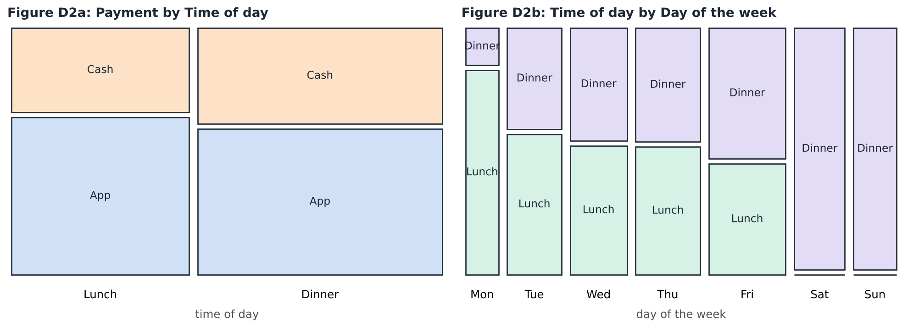
Mosaic plots. The width of each column shows how many orders fall in that category; the heights inside a column show the conditional distribution of the other variable. Which statements are supported by Figures D2a and D2b?
- In D2a, the share of app payments is roughly the same at lunch and at dinner, so payment method and time of day seem unrelated.
- In D2a, more orders were paid in cash than in the app.
- In D2b, there were no lunch orders on Saturday and Sunday.
- In D2b, Monday has very few dinner orders.
- In D2b, every day has the same number of orders.
- a: the App/Cash split is about 65% / 35% at lunch and 60% / 40% at dinner: roughly equal rectangles across the categories, so no (strong) relationship. This is how the lecture read the “Smoking vs Sex” mosaic plot.
- b is false: the App rectangles are the larger ones in both columns (187 app vs 113 cash orders).
- c, d: the Saturday and Sunday columns are (almost) all “Dinner”, and the Monday column is almost all “Lunch” (only 4 dinner orders).
- e is false: the columns have different widths, so the days have different numbers of orders.
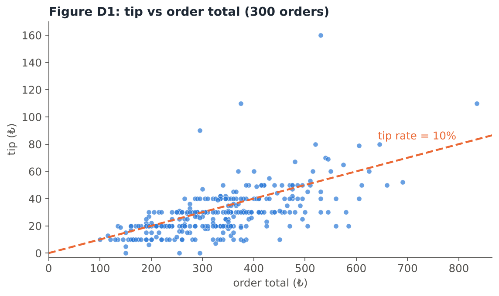
Which statements are supported by Figure D1? Select all that apply.
- There is a positive, roughly linear relationship between the tip and the order total.
- Many points lie in horizontal rows at ₺10, ₺20, ₺30, …, so customers tend to round their tips to a multiple of ₺10.
- More points lie below the dashed 10% line than above it, so most customers tipped less than 10% of the order total.
- The plot proves that bigger orders cause bigger tips for every customer.
- There are more small orders (₺100–₺400) than very large ones, and a few very generous tips stand out.
- a, c, e: In these data, 65% of the orders are below the 10% line, and the largest tip (₺160 on a ₺530 order, a 30% tip) is a clear outlier.
- b: 72% of the tips are multiples of ₺10. The rows of points are the scatter-plot version of the spikes we saw in histograms with narrow bars.
- d is false: a scatter plot shows a relationship; it does not prove anything about every customer, and this is only a pilot study.
Comparative scatter plots. A student drew tip vs order total separately for app and cash payments:
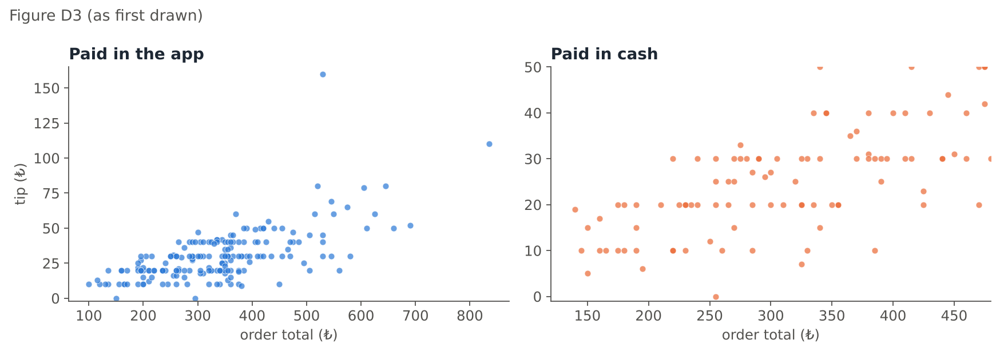
Looking at these plots, cash tips seem to be much larger than app tips. What is wrong?
- Nothing: the cash customers clearly tip more.
- The plots should be pie charts.
- The two plots use different scales on the axes, so they cannot be compared directly. Comparative scatter plots must use the same scales.
- The scatter plots should be replaced by histograms of tips.
The cash plot has a \(y\)-axis from 0 to 50 (and a shorter \(x\)-axis), while the app plot goes up to 160, so the cash points are “stretched”. The lecture’s note on comparative scatter plots: the scale on both plots is the same, to allow for direct comparison. With the same scales the two groups look similar (average tip rate 8.9% for app and 8.5% for cash):
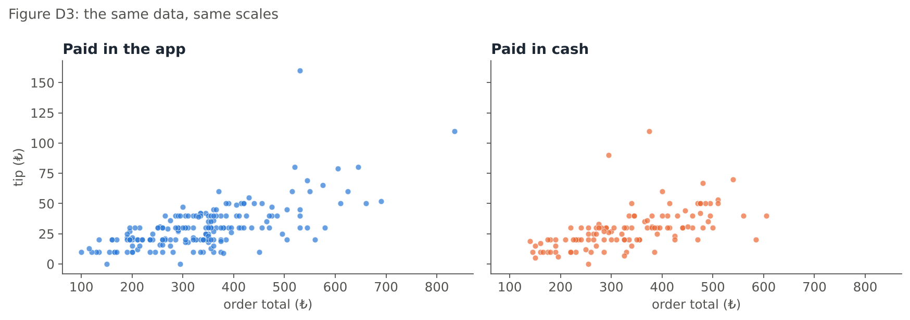
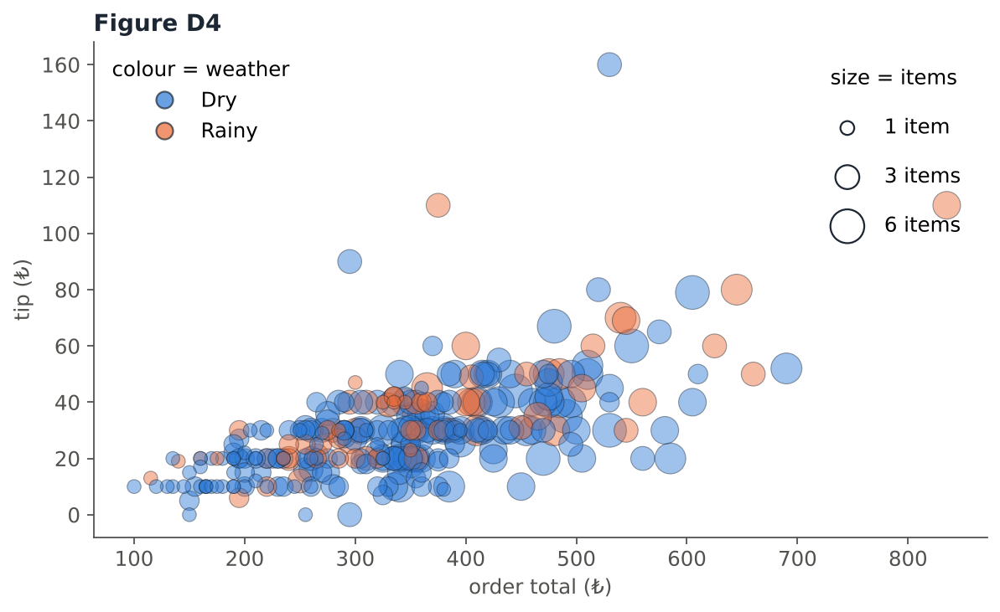
Bubble plot for mixed relationships. In Figure D4, which statements are true? Select all that apply.
- The plot shows four variables: TOTAL (\(x\)), TIP (\(y\)), ITEMS (bubble size) and WEATHER (colour).
- Bubble size is used for a numerical variable and colour for a categorical grouping.
- A bubble plot can only show two variables.
- Orders with more items (bigger bubbles) tend to have larger totals.
- Colour can only be used for numerical variables.
- A bubble chart is an enhanced scatter plot: two numerical variables on the axes and a third numerical variable as bubble size. Extra variables can be added with colours (categorical grouping) and shapes (another categorical variable).
- d: the big bubbles are mostly on the right. With three numerical variables in one bubble chart we can make three pairwise comparisons (TOTAL vs TIP, TIP vs ITEMS, TOTAL vs ITEMS) and a three-way comparison.
Part E — Case study: student flats near METU
A website listed 160 flats for rent within 25 km of the METU campus in September 2026. (The data were simulated for this recitation.) For each flat we have the monthly rent (₺), the size (m²), the distance to campus (km), the building age (years), the district (Çankaya, Yenimahalle or Etimesgut) and whether it is furnished.
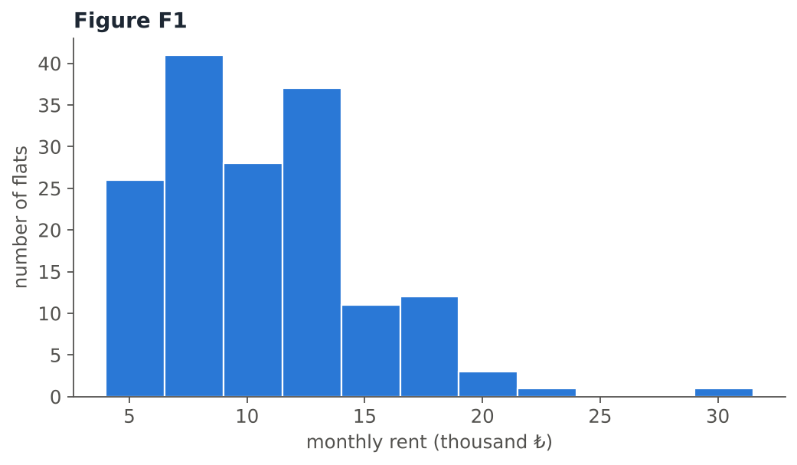
Use Figure F1 (classes of width ₺2,500 starting at ₺4,000). Which statements are supported? Select all that apply.
- The distribution of rents is positively (right) skewed.
- Most flats rent for less than ₺15,000 a month.
- The histogram shows that bigger flats are more expensive.
- The modal class is ₺6,500–₺9,000.
- After a gap, one flat at almost ₺30,000 is far from the others: a potential outlier.
- Rent is a categorical variable, so a bar chart should be used instead.
- a, b: the long tail is on the right; about 86% of flats are below ₺15,000.
- c is not supported: a histogram shows one variable. To see the relationship with size we need a scatter plot (Figure F2).
- d: the tallest bar (41 flats) is 6.5–9 thousand ₺.
- e: there are no flats between about ₺24,000 and ₺29,000, then one at ₺29,450.
- f is false: rent is numerical (continuous), so a histogram is the right graph.
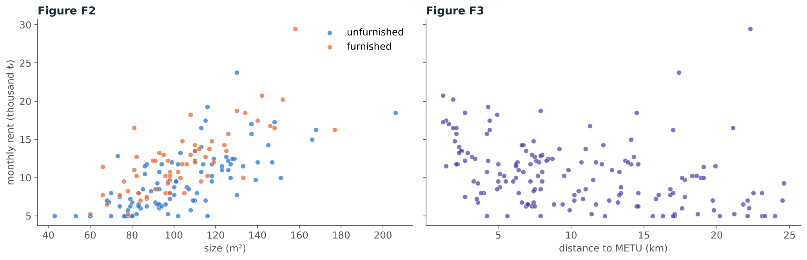
Use Figures F2 and F3. Which statements are supported? Select all that apply.
- F2 shows a positive, roughly linear relationship between size and rent.
- For flats of the same size, furnished flats tend to be more expensive than unfurnished ones.
- F3 shows a negative nonlinear relationship: rent falls quickly over the first few kilometres and then levels off.
- F3 shows no relationship between distance and rent.
- F3 shows a strong positive relationship between distance and rent.
- In both plots, rent is the response variable.
- a, b: the cloud in F2 rises from left to right, and the orange (furnished) points lie mostly above the blue ones. Colouring the points by group is a simple way to compare groups in one scatter plot.
- c: rent clearly decreases with distance, but along a curve: a negative nonlinear relationship (one of the typical patterns in the lecture). d and e are therefore false.
- f: rent is the outcome we want to understand, so it goes on the \(y\)-axis.
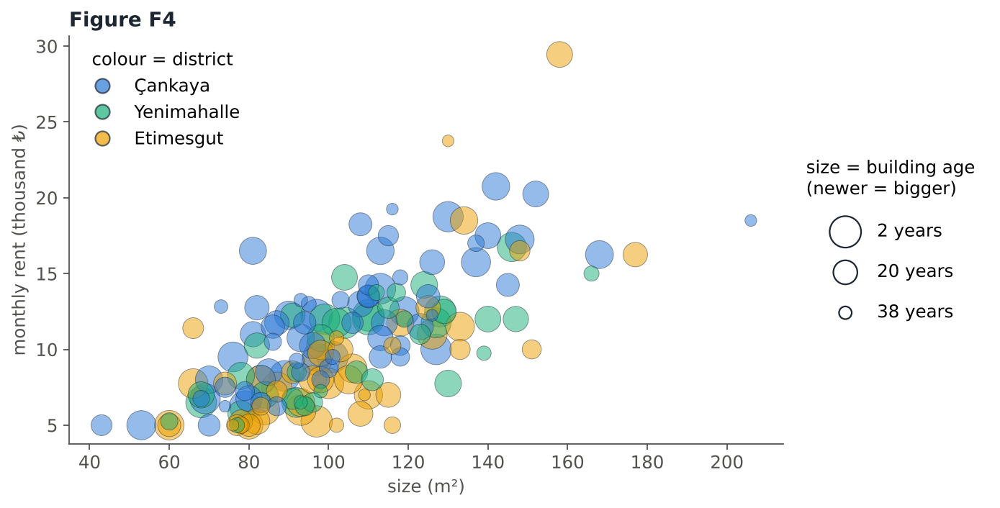
In Figure F4, the position shows size and rent, the bubble size shows how new the building is (newer = bigger bubble), and the colour shows the district. How many variables are displayed in this one graph?
- 2
- 3
- 4
- 5
Four: size (\(x\)), rent (\(y\)), building age (bubble size) and district (colour). Three are numerical and one, the colour, is a categorical grouping. Notice that the yellow (Etimesgut) bubbles tend to sit lower than blue (Çankaya) bubbles of the same size.
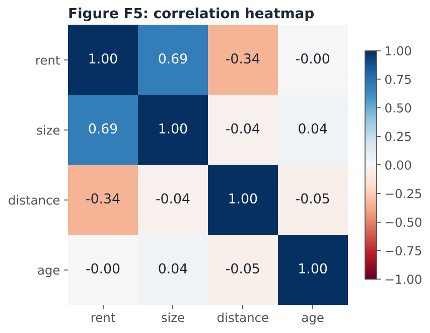
Figure F5 is a correlation heatmap: each cell is the correlation coefficient of two variables.
The strongest linear relationship with rent is with , with \(r =\) .
The correlation between rent and distance is \(r =\) .
The correlation between rent and building age is approximately .
The numbers on the diagonal are all equal to , because each variable is perfectly correlated with itself.
- Size: \(r = 0.69\), a fairly strong positive linear relationship.
- Distance: \(r = -0.34\) looks weak, but F3 showed a clear curved relationship. \(r\) measures only the linear relationship, so it understates a nonlinear pattern. Always look at the scatter plot too.
- Age: \(r \approx 0\): almost no linear relationship with rent in these data.
- The heatmap is symmetric: the value above the diagonal equals the value below it.
Part F — Your Turn
Try the following questions on paper first, then check your answers.
The waiting times (minutes) of 40 students at the campus ring-bus stop were recorded:
1.2, 1.3, 1.4, 1.5, 2.2, 2.2, 2.4, 2.6, 3.0, 3.3, 3.5, 3.7, 4.3, 4.6, 5.4, 5.4, 5.6, 5.6, 5.6, 5.8, 5.9, 6.0, 6.2, 6.5, 6.9, 7.4, 8.2, 8.3, 9.6, 9.9, 11.3, 11.3, 11.8, 13.9, 14.3, 18.1, 19.2, 21.4, 24.8, 28.6
(a) Using the table of the lecture, the number of classes should be between 5 and .
(b) Using 6 classes, the class width is \((28.6 - 1.2)/6 =\) , rounded up to minutes. Start the first class at 0.
(c) Complete the frequency distribution:
| Class | 0–5 | 5–10 | 10–15 | 15–20 | 20–25 | 25–30 |
|---|---|---|---|---|---|---|
| Frequency |
(d) The relative frequency of the class 5–10 is , and the modal class is .
(e) The histogram is .
(a) \(n = 40 < 50\) → 5–7 classes. (b) Range \(= 28.6 - 1.2 = 27.4\); \(27.4 / 6 = 4.57\) → 5. The first class starts at 0, which is smaller than the smallest value 1.2, and 6 classes of width 5 cover 0–30.
(c) Values below 5 run from 1.2 to 4.6: 14; 5–10 (5.4 to 9.9): 16; 10–15 (11.3, 11.3, 11.8, 13.9, 14.3): 5; 15–20 (18.1, 19.2): 2; 20–25 (21.4, 24.8): 2; 25–30 (28.6): 1. Check: \(14 + 16 + 5 + 2 + 2 + 1 = 40\).
(d) \(16/40 = 0.40\); the modal class is 5–10 (the highest bar).
(e) Most waiting times are short and a few are long: a long right tail, so positively (right) skewed. The value 28.6 is far from most others and could be checked as a potential outlier.
| Class | Frequency | Relative frequency |
|---|---|---|
| 0–5 | 14 | 0.350 |
| 5–10 | 16 | 0.400 |
| 10–15 | 5 | 0.125 |
| 15–20 | 2 | 0.050 |
| 20–25 | 2 | 0.050 |
| 25–30 | 1 | 0.025 |
| Total | 40 | 1.000 |
Using the frequency distribution of Q29, a frequency polygon is drawn.
The points of the polygon are placed at \(x = 2.5,\) \(,\ 12.5,\ 17.5,\ 22.5,\) .
The highest point is at \(x =\) with height .
To close the polygon, points with frequency 0 are added at \(x =\) and \(x =\) .
The points are at the class midpoints \((0+5)/2 = 2.5,\ 7.5,\ \dots,\ 27.5\) with heights 14, 16, 5, 2, 2, 1, joined by straight lines. The highest point is the midpoint of the modal class, (7.5, 16). The closing points lie one class width beyond the ends: \(2.5 - 5 = -2.5\) and \(27.5 + 5 = 32.5\) (they only bring the polygon down to the axis).
An instructor recorded the number of practice quizzes (\(x\)) solved by six students and their midterm scores (\(y\)):
| \(x\) (quizzes) | 1 | 2 | 3 | 4 | 5 | 6 |
|---|---|---|---|---|---|---|
| \(y\) (score) | 45 | 50 | 62 | 58 | 70 | 81 |
(a) The explanatory variable is the number of , and the response variable is the midterm .
(b) \(\bar{x} =\) and \(\bar{y} =\) .
(c) \(\sum (x_i-\bar{x})(y_i-\bar{y}) =\) , \(\sum (x_i-\bar{x})^2 =\) and \(\sum (y_i-\bar{y})^2 =\) .
(d) \(r =\) .
(e) The relationship is and linear.
(a) The quizzes may explain changes in the score (the outcome), so \(x\) = number of practice quizzes (horizontal axis) and \(y\) = midterm score.
(b) \(\bar{x} = 21/6 = 3.5\), \(\bar{y} = 366/6 = 61\).
(c)
| \(x\) | \(y\) | \(x - \bar{x}\) | \(y - \bar{y}\) | \((x-\bar{x})(y-\bar{y})\) | \((x-\bar{x})^2\) | \((y-\bar{y})^2\) |
|---|---|---|---|---|---|---|
| 1 | 45 | −2.5 | −16 | 40 | 6.25 | 256 |
| 2 | 50 | −1.5 | −11 | 16.5 | 2.25 | 121 |
| 3 | 62 | −0.5 | 1 | −0.5 | 0.25 | 1 |
| 4 | 58 | 0.5 | −3 | −1.5 | 0.25 | 9 |
| 5 | 70 | 1.5 | 9 | 13.5 | 2.25 | 81 |
| 6 | 81 | 2.5 | 20 | 50 | 6.25 | 400 |
| Sum | 118 | 17.5 | 868 |
(d) \[r = \frac{118}{\sqrt{17.5}\,\sqrt{868}} = \frac{118}{4.183 \times 29.462} = \frac{118}{123.25} = 0.96\]
(e) \(r = 0.96\) is close to 1: a strong positive linear relationship. Students who solved more practice quizzes tended to get higher midterm scores.
The amounts (₺) that 500 students loaded onto their transit cards are shown with three different bar widths.
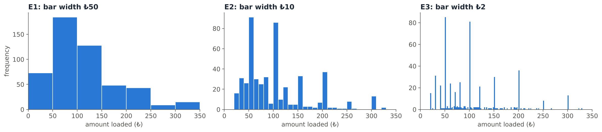
Describe what each histogram tells you about the data. What do you learn from E2 and E3 that E1 hides? (4–6 sentences)
Model answer:
- E1 (₺50): the distribution is unimodal and positively (right) skewed: most students load less than ₺150, and a few load large amounts up to ₺350.
- E2 (₺10): it is no longer a smooth unimodal shape; there are tall peaks at ₺50, ₺100, ₺150, ₺200, … with low bars in between.
- E3 (₺2): the histogram is clearly multimodal. The large peaks at multiples of ₺50, and smaller ones at ₺20, ₺30, ₺40, …, show that students round the amount they load to “nice” numbers. It is also clear that no amount below ₺20 was loaded (perhaps a minimum top-up).
- Lesson: the bar width can hide or reveal features of the data. Wide bars show the overall shape; narrow bars show details such as rounding, gaps and outliers.
Choose the most appropriate graph for each task.
- Compare the exam score distributions of a class of 35 students and a class of 140 students :: Relative-frequency histograms
- Show the relationship between number of siblings and number of pets for 500 students (both are small whole numbers) :: Jittered scatter plot
- Show the relationship among three continuous variables (height, weight and age) in a single graph :: Bubble chart
- Show tip vs bill separately for male and female bill payers so the two groups can be compared :: Comparative scatter plots (same scales)
- Find unusual values among 12 measurements of the boiling point of a liquid :: Dot diagram
- Show whether the faculty (Engineering / Arts and Sciences / Architecture) and dormitory use (yes / no) of students are related :: Mosaic plot
- Different group sizes → relative frequencies, with the same classes.
- Discrete data with many repeated pairs → overplotting, so jitter the points (add a little random noise).
- Three numerical variables → bubble chart: \(x\), \(y\) and bubble size.
- Same relationship in two groups → comparative scatter plots, drawn on the same scales to allow direct comparison.
- A small data set and unusual values → dot diagram, whose aim is to identify unusual features.
- Two categorical variables → mosaic plot, which shows the conditional distributions; roughly equal rectangles across categories suggest no relationship.
In a small pilot study, students wore step counters for one week. The table shows the average daily steps (thousands) and, in parentheses, the number of students:
| Lives in a dorm | Lives at home | Total | |
|---|---|---|---|
| Prep | 9.1 (40) | 6.2 (35) | 7.7 (75) |
| 1st year | 8.4 (52) | 5.9 (60) | 7.1 (112) |
| 4th year | 11.5 (3) | 6.4 (48) | 6.7 (51) |
| Total | 8.8 (95) | 6.1 (143) | 7.2 (238) |
Write three observations from the table. At least one of them must be a warning about how to interpret the table.
Model answer (any three of these):
- In every year, students who live in a dorm walk more on average than students who live at home (e.g. 8.4 vs 5.9 thousand steps for 1st-year students).
- For students who live at home, the averages are similar in all years (5.9–6.4 thousand steps).
- Warning: the highest average, 11.5 thousand steps for 4th-year dorm students, is based on only 3 students.
- Most 4th-year students live at home, so their total average (6.7) is lower partly because so few of them live in a dorm.
- Warning: this is a pilot study; there should be no temptation to make inferences about all students. It can only suggest ideas for a careful study.
Which of the following statements are true? Select all that apply.
- A histogram can have gaps between its boxes if the classes are categories.
- The vertical axis of a histogram may show frequency, relative frequency or percent, and the shape stays the same.
- A modal class is the class with the largest number of observations.
- If \(r = 0\), there is no relationship of any kind between \(x\) and \(y\).
- Jittering adds a small amount of random noise to the data to prevent overplotting.
- In a bubble chart, the bubble size must represent a categorical variable.
- An outlier may be a correct measurement that represents a rare event.
- An open-ended class can only be formed at the upper end of a histogram.
- a is false: a histogram consists of adjoining boxes, and it is not suitable for categorical data.
- d is false: \(r = 0\) means no linear correlation; a strong nonlinear (e.g. U-shaped) relationship can still exist.
- f is false: bubble size shows a third numerical variable; colours or shapes are used for categorical variables.
- h is false: an open-ended class can be formed at the higher or the lower end.
All data sets on this page were created for this recitation. The patterns are realistic, but the numbers are not real measurements.